WWWatcher is a passive network metadata observatory — it puts AI to work understanding the threats around you, watching for the things trying to surveil and attack you and surfacing them before they reach you. It observes the traffic; it never intrudes.
WWWatcher captures packet metadata — not payloads — from every interface on the host, stores it in PostgreSQL with TimescaleDB, and surfaces it through 23 dashboard tabs covering flows, anomalies, MITRE ATT&CK mapping, geo, topology, traceroute, threat hunt, and counter-recon. Built in Rust, shipped as a single Tauri desktop app on Linux, macOS, and Windows. Single-user. Self-hosted. Your data never leaves your machine.
We aim AI at what drains and threatens you — never at you. We gather nothing.
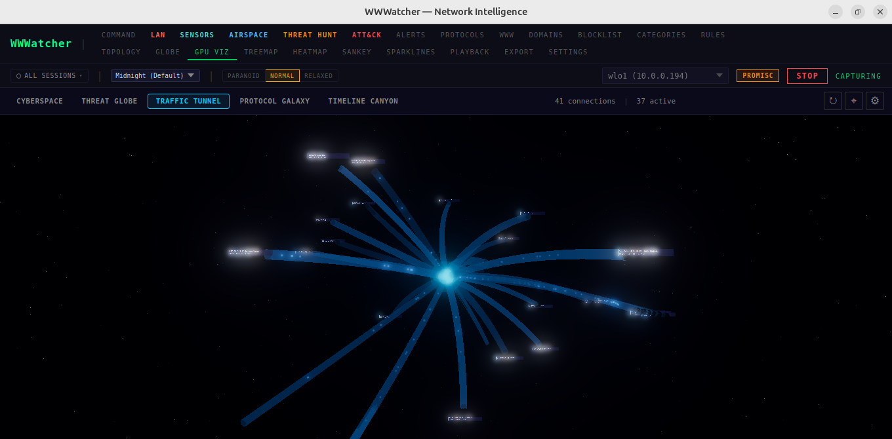
Nine crates · one binary · metadata observatory by design. WWWatcher is what you reach for when an off-the-shelf SIEM is too coarse and a packet sniffer is too noisy.
Captured 2026-05-09. The same WWWatcher instance, switched across 13 of its 23 dashboard tabs while the operator's home network was actively under observation.
// PII REDACTED: MAC addresses, public IPs, IPv6 EUI-64 host identifiers, hostnames containing personal identifiers, neighbor SSIDs, and ASN/org strings have been overlaid with diagonal slash bars. RFC1918 local addresses, the application UI itself, and aggregate counters are unredacted.
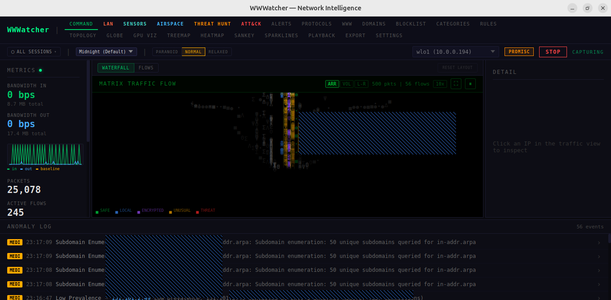
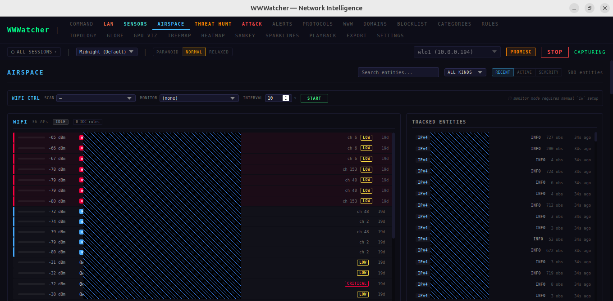
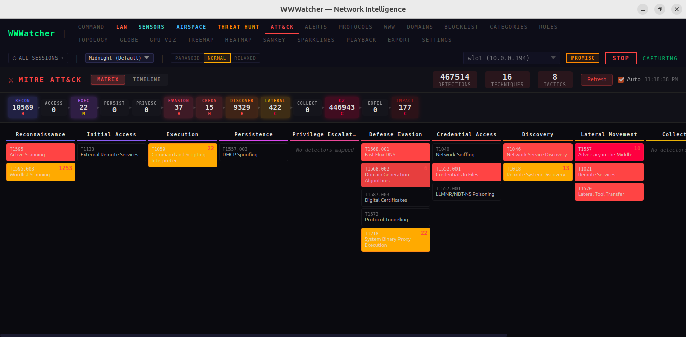
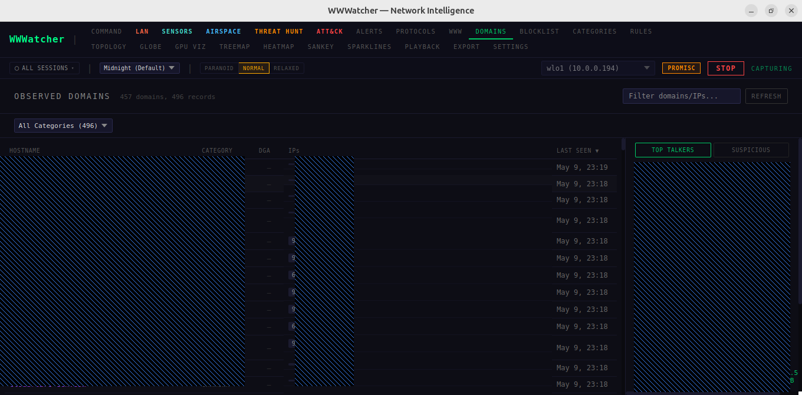
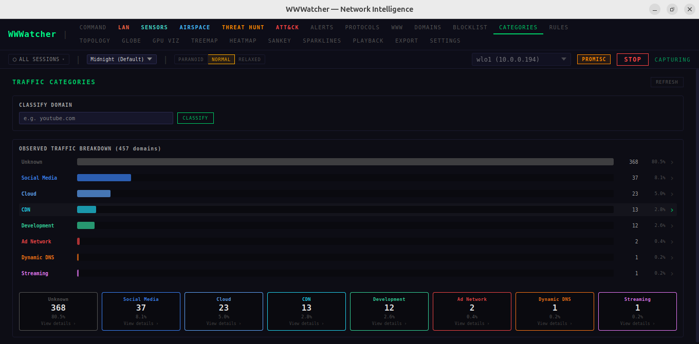
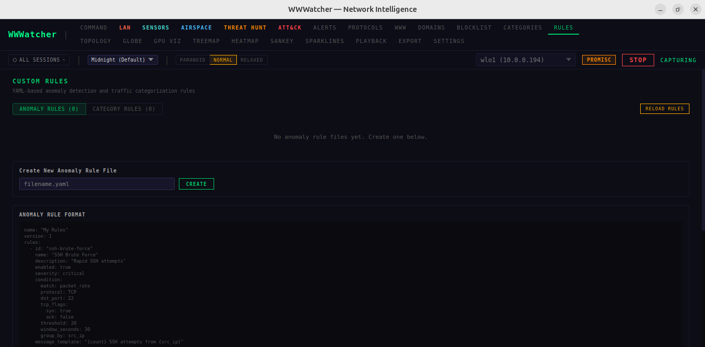
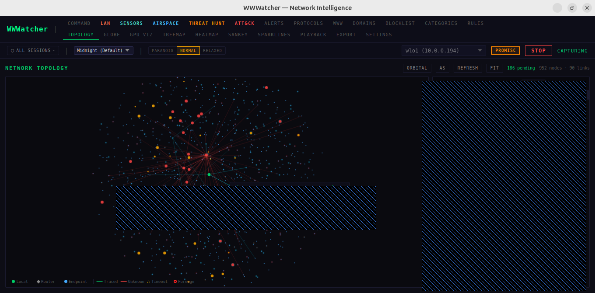
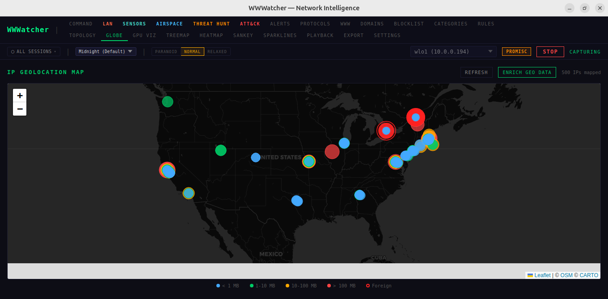
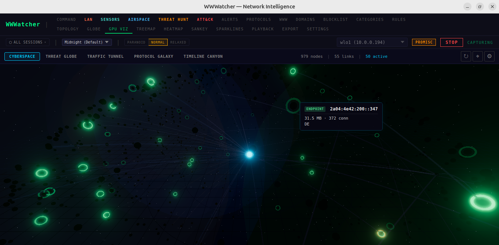
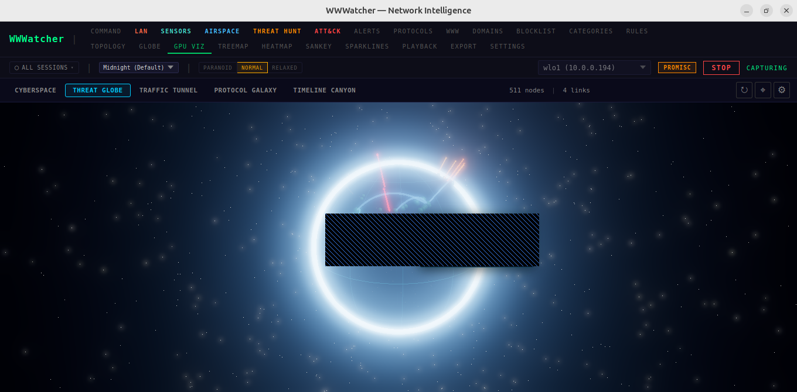
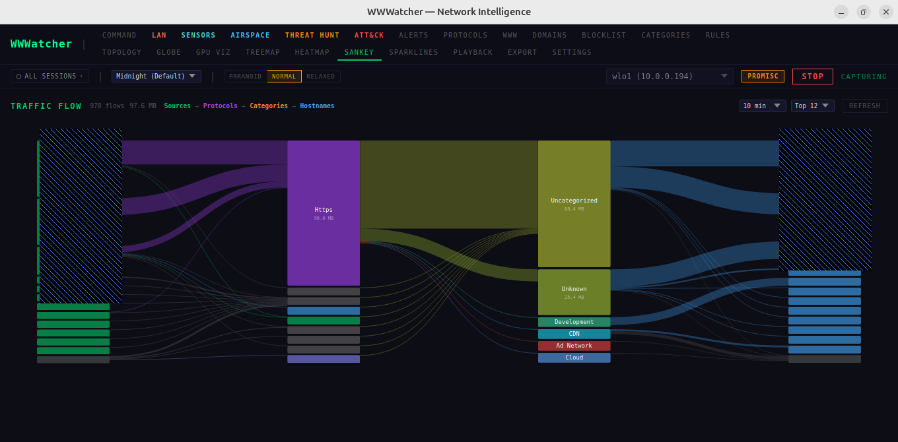
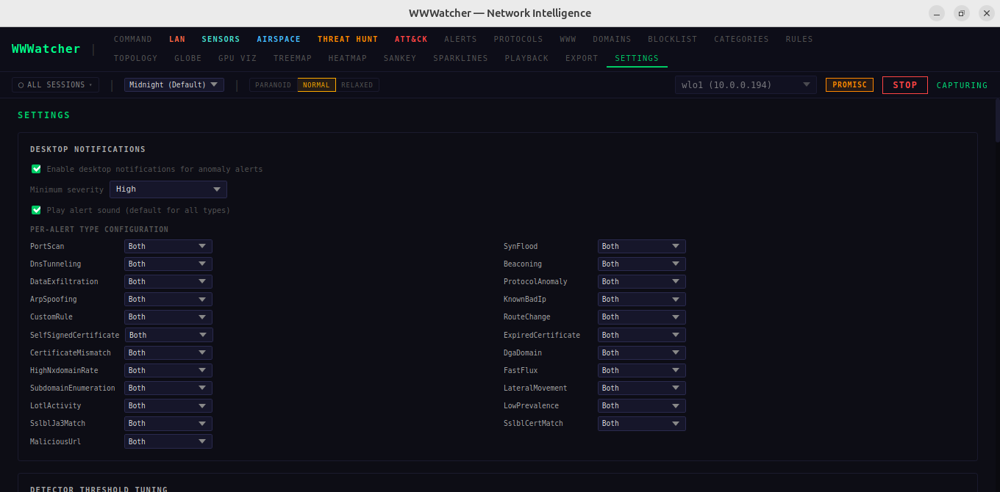
Background radio environment logger for Android.
RadioLogger runs continuously on rooted Android devices, capturing the full radio picture — GPS, WiFi APs, cell towers, Bluetooth and BLE — into rolling CSV files. The data feeds back into WWWatcher as a remote sensor stream, extending the observatory's coverage from one machine to a fleet.
WWWatcher and RadioLogger are the same engineering muscle that fixes enterprise platform problems — AI turned on the threats trying to surveil you, so you see them first and the data stays on your infrastructure. Metadata only. Self-hosted. Single-binary. These instruments observe their operator’s own environment, for their operator — nothing flows back to us. The same instinct — watch your own ground, surface what matters, give nothing away — scales from a single device to a Fortune 500 platform.
← SEE THE CONSULTING PRACTICE